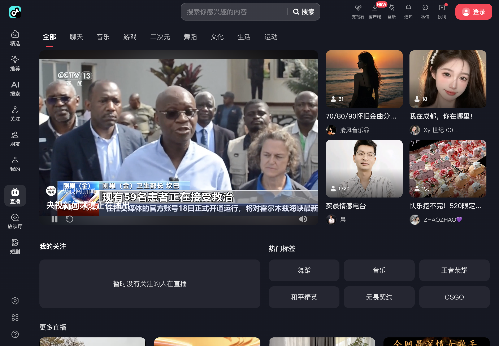
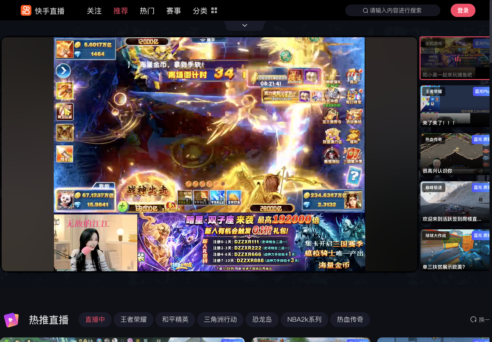
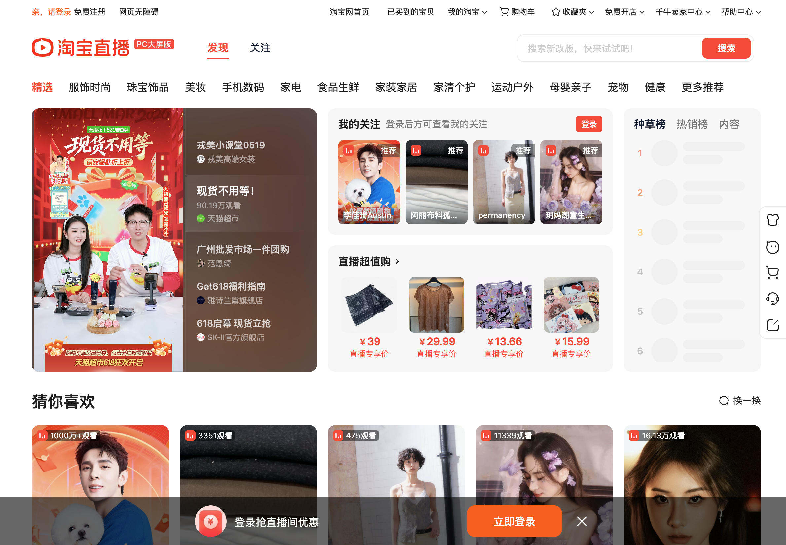
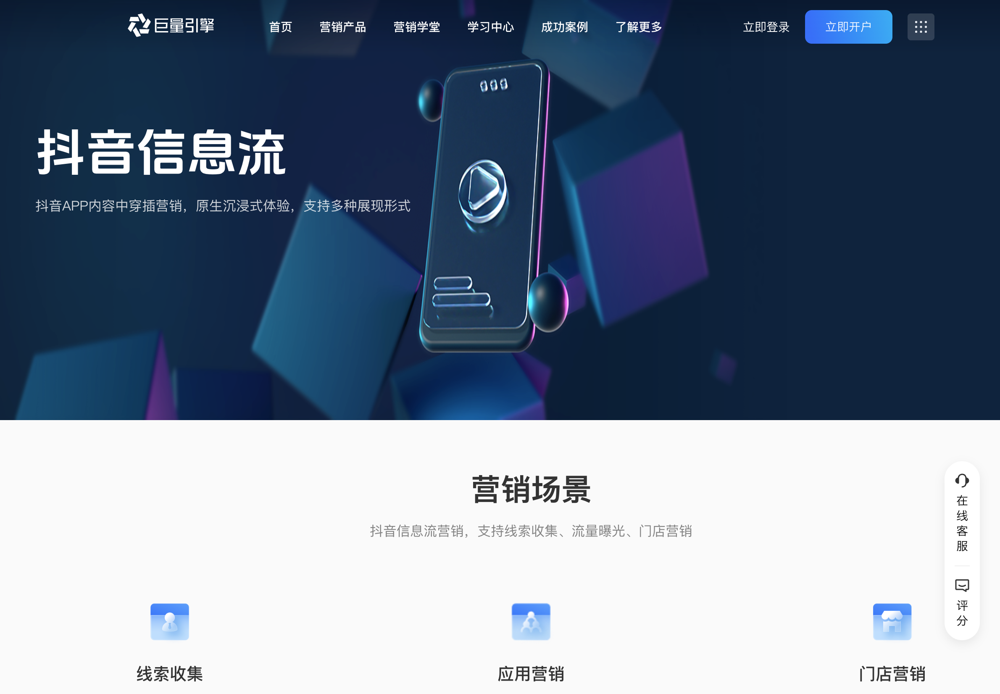
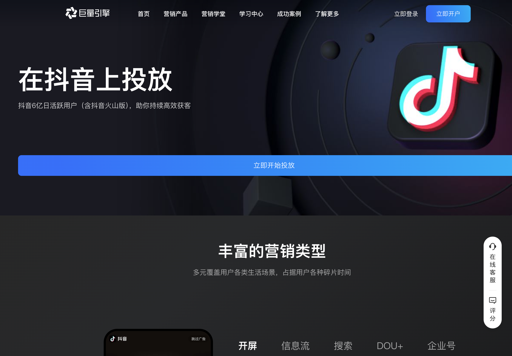
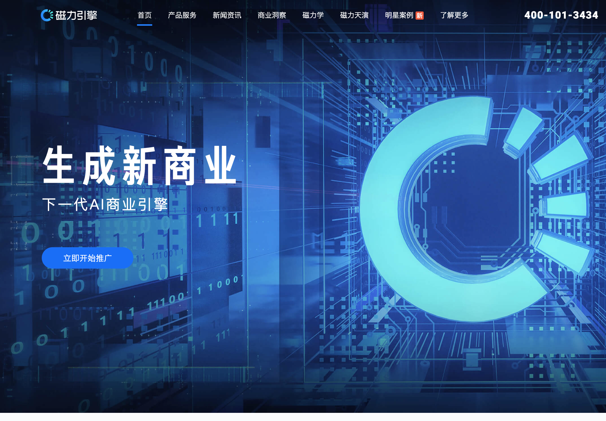

封面图占位：直播品牌主题化项目封面，展示广场高亮卡+直播间内品牌定制核心画面，包含康师傅、库迪等品牌落地效果
| 项目名称 | 直播品牌主题化——广场高亮卡与间内品牌定制 |
|---|---|
| 项目角色 | 交互/视觉设计师（独立负责） |
| 项目周期 | 2026年Q1-Q2 |
| 所属团队 | 美团平台设计中心 |
| 项目定位 | 构建覆盖"广场→直播间"全链路的品牌主题化设计体系，将品牌定制从"逐次设计"升级为"参数化配置"，为直播商业化提供可规模化的设计基础设施 |
美团直播业务正处于商业化加速期，2026年Q1品牌营销商业化总收入达215万元，助力行业创收近3000万元。然而，在品牌定制的设计侧，存在两个核心问题：
广场侧——品牌"被看见"的能力不足。 直播广场卡片长期采用统一样式，品牌商家在广场侧缺乏视觉差异化手段。高亮卡作为品牌曝光的核心入口，其商业溢价空间未被充分释放——品牌方愿意为"更醒目的曝光位"付费，但现有卡片形式无法承载品牌个性化表达。
间内侧——品牌"被记住"的体验断裂。 直播间内缺少系统化的品牌定制组件体系，每次品牌合作需从零设计，设计效率低且品牌一致性难以保证。用户从广场点击品牌高亮卡进入直播间后，品牌氛围突然消失，沉浸感被打断，商业价值也随之打折扣。
这两个问题的本质是同一个矛盾：品牌表达力与系统稳定性/规模化效率之间的矛盾。 品牌方希望尽可能多地展示品牌元素，而平台侧需要保证卡片结构的稳定性、信息架构的一致性，以及新品牌接入的效率。
而这一矛盾的解决，需要同时回答两个方向的价值命题——品牌主题化不仅要服务于商家侧的商业诉求，也要为用户侧创造真实的体验增量。 对商家而言，品牌主题化的价值体现在两个层面：一是品牌传播——通过广场高亮卡和间内全链路品牌定制，让品牌在直播场景中获得系统性的视觉曝光，从"被看见"到"被记住"；二是单品塑造——通过特殊时刻动画等动态组件，在主播讲解关键商品时制造"高光时刻"，将用户注意力精准聚焦到核心单品上。对用户而言，品牌主题化同样带来双重收益：一是沉浸观感——从广场到直播间的品牌氛围连贯一致，避免了进入直播间后品牌感知断裂的割裂体验；二是理解商品——品牌化的视觉语言帮助用户更快速地识别商品品类、品牌调性和核心卖点，降低信息获取的认知成本。这种"双端受益"的价值结构，是品牌主题化能够持续获得商业投入和用户接受的根本前提。
图片占位：问题现状对比图——左侧展示改造前的直播广场（所有卡片样式统一，品牌无差异化），右侧展示改造前的直播间（默认样式，无品牌定制元素）
在方案设计之前，我们对抖音、快手、淘宝直播等主流平台的直播广场卡片和间内品牌定制能力进行了系统性竞品分析，并深入调研了竞品"为什么不做"广场卡片品牌主题化的根本原因。
三大平台的直播广场/发现页均采用高度统一的卡片模板，品牌方无法对卡片的视觉框架进行任何定制。



原因一：算法分发效率优先，标准化卡片是推荐系统的基础设施。
抖音2024年公开的推荐算法原理显示，其核心是通过神经网络计算用户行为概率（点赞、分享、评论等），实现"千人千面"个性化推荐。标准化的卡片结构（封面图+标题+主播信息）是算法高效运转的基础——系统需要统一的内容特征提取格式来进行匹配和排序。如果允许品牌自定义卡片视觉框架，会增加特征提取的复杂度，干扰CTR预估模型的准确性。


原因二：商业化路径是"卖流量"，与"卖视觉定制"存在模式冲突。
三大平台的直播商业化产品体系高度一致：抖音的巨量引擎提供信息流广告（FeedsLive）和开屏广告（TopView），品牌花钱买的是曝光量和人群定向；快手的磁力引擎提供品牌直播"海景房置顶"（位置资源）和投流工具（磁力金牛）；淘宝的超级直播提供直播广场坑位、猜你喜欢资源位等。核心逻辑都是"花钱买流量曝光"，而非"花钱改卡片样式"。如果开放卡片视觉定制，等于开辟了一条新的商业化路径，会与现有投流体系产生定价冲突。

原因三：用户体验一致性——"原生融入"是信息流平台的设计哲学。
抖音信息流广告的官方核心卖点是"以原生样式融入抖音推荐视频流"，让用户感知不到广告与自然内容的区别。如果品牌卡片视觉差异过大，反而破坏了这种"沉浸式信息流"体验，降低用户停留时长。这些平台的核心用户心智是"刷内容"，过度的品牌视觉定制会让广场变成"广告橱窗"。
值得注意的是，快手在818购物节期间确实为花西子等品牌提供了"品牌直播海景房置顶"和"定制虚拟人形象卡牌"等合作方案（来源：《快手818上新季收官，磁力引擎助力品牌与"确定性增长"热恋一夏》）。但这本质上是位置资源+互动玩法的短期营销事件（活动持续13天），不是常态化的广场卡片视觉定制能力。品牌获得的是"置顶曝光位"而非"卡片主题皮肤"，活动结束后恢复原状。
淘宝有成熟的Live Card（店铺动态卡片）体系，品牌可以深度定制店铺首页的视觉风格。但根据阿里巴巴开放平台文档，Live Card被明确定义为"商家私域最小运营单元"，属于店铺装修升级，与直播发现页的公域分发是两套独立体系。在直播广场（猜你喜欢信息流），卡片同样是标准化的封面+标题格式。
竞品不做的根本原因是平台底层逻辑的差异——抖音/快手/淘宝直播的核心是"算法驱动的内容分发"，标准化卡片服务于推荐效率。而美团直播的场景更偏"目的性消费"（用户带着明确需求来），品牌视觉辨识度反而能提升转化效率。这意味着：
| 维度 | 抖音/快手/淘宝 | 美团直播 |
|---|---|---|
| 用户心智 | "刷内容"，被动发现 | "找服务"，主动消费 |
| 分发逻辑 | 算法千人千面 | 品类+地理位置+品牌 |
| 品牌价值 | 原生融入，弱化品牌感 | 品牌辨识度=转化效率 |
| 商业化路径 | 卖流量（投流） | 卖品牌定制权益（溢价） |
内部数据支撑（来源：学城内部文档）
① 核销率对比验证"目的性消费"：抖音直播到店核销率约35%，而美团到店核销率90%以上。核销率的巨大差距直接说明美团用户是"带着明确消费目的来的"——买了就去用，而非冲动下单后遗忘。
——来源：《浅聊休娱低价策略和优惠感知》内部分享，2024年3月② 访购率数据验证"主动消费"：直播广场优惠券核心用户访购率达30%，远高于大盘12%的访购率（2.5倍）。用户进入直播场景后有极强的购买转化意愿，而非单纯"逛内容"。
——来源：《直播广场福利中心建设》PRD数据分析，2026年1月③ 用户调研验证"找店心智"：在41名受访用户中，11人（27%提及率）明确表示"目的性强的诉求会选择用美团进行搜索"，认为美团找店选店比抖音更高效。用户在美团的行为模式是"搜索→比较→决策→到店"，而非"刷到→冲动→下单→可能不去"。
——来源：《美团与抖音本地生活用户认知及使用体验访谈报告》④ 平台定位差异的行业共识：美团优选直播团队在对标分析中明确指出——"抖音为全域兴趣电商（内容变现），快手为信任电商（内容变现），美团用户的第一心智为'购物'"。美团直播定位为"电商内容化"而非"内容电商化"，用户来美团的核心动机是消费决策，不是消磨时间。
——来源：《美团优选AI直播实践分享》产品委员会文档
在直播广场卡片层面做品牌主题化定制，美团有机会建立行业差异化优势——将高亮卡从单纯的"流量曝光位"升级为"品牌表达载体"，为商业化售卖创造更高的溢价空间。竞品因为算法分发的底层逻辑选择不做，恰恰为美团留出了差异化的窗口期。
基于背景分析和竞品研究，我们确定了三个核心设计目标：
| 设计目标 | 衡量指标 |
|---|---|
| 提升品牌在广场侧的视觉辨识度和点击转化 | 品牌高亮卡点击率提升{待补充：X%} |
| 降低品牌定制的设计周期，实现规模化接入 | 单次品牌接入周期从5-7天缩短至2天 |
| 构建间内全链路品牌沉浸体验 | 间内品牌定制组件复用率{待补充：X%} |
设计原则。 在明确目标之后，我们进一步提炼了指导整个设计体系的核心原则，分为功能维度和样式维度两个层面。功能维度关注"体系如何运转"：一是可复用性——所有组件和规范必须支持跨品牌复用，避免为单一品牌做定制化开发，这是规模化的前提；二是触达效率——品牌元素的配置和上线流程必须足够轻量，从素材提交到线上生效的链路越短，商业化的响应速度越快。样式维度关注"体系如何呈现"：一是视觉语言规范——建立统一的品牌定制视觉语言（色彩体系、元素密度、层级关系），确保不同品牌在同一套框架下呈现时，既有品牌个性又不破坏平台整体的视觉秩序；二是视觉吸引力评估——对每个组件的品牌化效果建立可评估的标准，避免"为了定制而定制"导致的视觉噪音。这套原则中有一个关键洞察：品牌主题化体系的最终形态，不应该是设计团队独占的封闭系统，而应该具备足够的开放性，让外部团队（如品牌方的设计团队、运营团队）也能在规范框架内自主承接品牌定制工作。这一"开放给外部团队承接"的设计理念，直接影响了后续参数化配置体系的设计方向。
整体设计策略分为三层：策略一——分层解耦广场高亮卡，平衡品牌表达与系统稳定；策略二——系统化搭建间内品牌定制组件，提升全链路品牌沉浸感；策略三——沉淀参数化设计规范，赋能品牌定制规模化复用。
面对"品牌表达力"与"系统稳定性"的核心矛盾，我们没有直接给方案，而是系统性地探索了两条路径，通过成本、风险、品牌表达力三个维度的对比分析，最终确定了分层解耦的设计策略。
保守方案以"稳定性、兼容性、用户熟悉度"为核心，在原有高亮卡片样式上做最小化设计变更——例如瑞幸咖啡仅更改品牌色，海底捞仅调整腰封元素。该方向可以最大程度保证品牌适配的稳定性和风险最小化，但品牌表达力受限，难以满足品牌方对"差异化曝光"的付费预期。
激进方案以"创新突破、体验升级、差异化竞争"为核心，打破传统卡片形式的边界——允许品牌自定义全背景、异形边框、动态元素等。品牌表达力极强，但适配成本高、系统风险大，且不同品牌之间的视觉一致性难以保证。
最终我们选择了"在可控成本内最大化品牌表达"的中间路径——分层解耦。
图片占位：保守方案vs激进方案对比推导图——左侧保守方案（最小化变更），右侧激进方案（全面定制），中间箭头指向最终方案"分层解耦"
最终方案采用"三层分离"架构，将高亮卡拆解为三个独立可控的设计层级，每层有明确的品牌定制边界和规则：
底层——背景层。 支持品牌提供纯色或渐变色值（如库迪的 #C47C42→#EDBA79），避免花哨，避免两个渐变色色相、明度差异过大。背景层是品牌调性的基础底色，成本最低、适配风险最小。
中层——边框/腰封层。 提供两种样式选择——"边框+腰封"组合（支持品牌增加边框，保证腰封两侧和边框自然过渡）和"单腰封"模式（支持品牌定制异形腰封，品牌字体应为一整部分无缝隙）。该层是品牌辨识度的核心载体，在可控成本内实现最大化的品牌表达。
顶层——商品信息层。 标题文字和商家文字的色值由品牌提供，需保证在白底上清晰展示。该层保持信息架构的稳定性，确保用户对商品信息的识别效率不受品牌定制影响。
图片占位：高亮卡三层分离架构设计图——从底到顶依次展示背景层、边框腰封层、商品信息层的拆解，标注每层的定制边界和规则
这套分层架构的核心价值在于：品牌可以在不触碰信息架构的前提下，通过背景色+腰封两个维度实现足够的品牌差异化表达，同时系统侧只需维护一套卡片结构，适配成本可控。
在进入具体组件设计之前，我们首先建立了一套完整的体系治理框架，将品牌主题化从"零散的组件设计"升级为"系统化的设计管线"。整个管线分为四个阶段：第一阶段是品牌素材收集——从品牌方获取VI基础素材（Logo、品牌色、字体、图形元素等），建立品牌素材库；第二阶段是元素归纳——对品牌素材进行设计语言层面的提炼，将具象的品牌素材抽象为可配置的设计变量（色彩变量、图形变量、动效变量等）；第三阶段是规范制定——基于归纳后的设计变量，制定每个组件的品牌化规范，明确定制边界、参数格式和质量标准；第四阶段是场景适配——将规范化的品牌设计变量适配到具体的业务场景中。
场景适配是整个管线的落地环节，我们将直播品牌主题化的场景划分为三个层级：直播广场（品牌高亮卡，解决"被看见"的问题）、直播间内（7个核心组件+特殊时刻动画，解决"被记住"的问题）、以及货架场景（商品卡、货架Tab等，解决"被转化"的问题）。这套"素材→归纳→规范→适配"的管线，确保了品牌主题化不是一次性的设计交付，而是一套可持续运转的设计生产体系。
广场高亮卡解决的是"品牌被看见"的问题，而用户点击进入直播间后，品牌体验的连贯性同样关键。如果广场侧是品牌主题色，进入直播间后却回到默认样式，品牌沉浸感会被打断，商业价值也会打折扣。
我们梳理了直播间内用户的核心交互触点，识别出7个关键品牌定制组件，构建了一套完整的间内品牌定制组件体系。
图片占位：直播间内品牌定制组件全景图——标注7个核心组件在直播间界面中的位置
① 气泡卡（商品讲解卡）。 用户在直播间内最高频接触的品牌触点。定制元素包括背景（357×624px，16px圆角）、腰封（250×40px）和按钮。背景支持品牌主题色渲染，腰封承载品牌标识，按钮使用品牌色强化购买转化。气泡卡是用户从"观看"到"购买"的关键转化节点，品牌化设计直接影响商品点击率。
② 点赞图标。 用户互动行为的品牌化表达。支持品牌自定义点赞图标样式，将默认的通用点赞替换为品牌专属元素（如康师傅的品牌icon），在高频互动中持续强化品牌认知。点赞是直播间内频次最高的用户行为之一，品牌化点赞图标能在用户无意识的互动中完成品牌曝光。
③ 货架Tab。 直播间商品货架的导航入口。支持品牌定制Tab样式，最多8个变体（如康师傅配置了8个不同的货架Tab），通过品牌色和品牌元素让货架区域与品牌调性一致。货架Tab是用户主动浏览商品的入口，品牌化设计能提升用户在货架区域的停留时长。
④ Banner。 直播间内的品牌展示位。支持品牌自定义Banner图，承载品牌活动信息、促销利益点等，是品牌在直播间内最大面积的视觉表达空间。Banner通常位于直播间顶部或商品列表上方，是用户进入直播间后最先注意到的品牌元素之一。
⑤ 商品卡。 包含商品卡背景、商品卡按钮和商品卡腰封三个子元素。背景使用品牌色渲染，按钮采用品牌主色（如康师傅 #E5241D、库迪 #CB7F3C），腰封承载品牌标识，三者协同构建品牌化的商品展示体验。商品卡是用户浏览商品列表时的核心信息载体，品牌化设计在不影响商品信息识别的前提下强化品牌氛围。
⑥ 累计下单图标。 用户下单后的品牌化反馈。支持品牌自定义累计下单图标样式和颜色（如库迪 #C3722E，含透明度规则），在用户完成交易的关键时刻强化品牌印象。累计下单是用户购买行为的正向反馈节点，品牌化设计能将"完成交易"的满足感与品牌认知绑定。
⑦ 特殊时刻动画（品牌高光动画）。 当主播重点介绍某一品牌商品时触发，以类礼物动画的形式强化该商品的感知，是间内品牌定制体系中唯一具备时序触发机制的动态组件。动画效果分为两个等级：
豪华版（全屏级）： 动画触发后，产品图从画面中央飞入，品牌专属特效（如火焰、光效）铺满全屏，遮盖直播间画面，同时叠加品牌卖点文案（如康师傅的"7种辣椒更出味，层层爽辣超过瘾"），整体时长约8秒。全屏级动画的视觉冲击力极强，能在瞬间抓住用户注意力，适合品牌重点商品的高光时刻——例如主播宣布"今天的王炸单品"时触发，将直播间的氛围推向高潮。
简陋版（悬浮级）： 产品图以悬浮贴片形式叠加在直播间画面上，不遮挡主播和直播内容，尺寸约占屏幕1/5，可在动画过程中切换展示多款商品，整体时长约8.5秒。悬浮级动画对直播间观看体验的干扰较小，适合常规商品的品牌感知强化——在主播逐一介绍商品时持续展示产品图，让用户在不中断观看的情况下建立商品认知。
两个等级的分级设计，让品牌方可以根据合作层级和商品重要性灵活选择动画规格，既满足了头部品牌对"高光时刻"的表达需求，也为常规品牌提供了轻量化的品牌感知方案。
图片占位：特殊时刻动画关键帧对比图——上排豪华版（全屏级）4个关键帧：产品飞入→特效铺开→文案叠加→动画退出；下排简陋版（悬浮级）4个关键帧：产品浮入→悬停展示→切换商品→动画退出
为验证组件体系的灵活性和适配能力，我们选择了两个风格差异显著的品牌进行首批落地：
康师傅——红色热烈主题。 以品牌红 #E5241D 为主色，字体色 #FFFED9（暖金色），按钮背景 #E5241D，累计下单 #FF3E33。8个货架Tab分别对应不同商品分类，整体呈现热烈、喜庆的品牌氛围，与康师傅"就是这个味"的品牌调性高度一致。特殊时刻动画采用豪华版（全屏级），以火焰特效铺满全屏，配合产品主图和卖点文案，将品牌的"辣"基因通过视觉语言极致放大。
库迪咖啡——金棕优雅主题。 以品牌金棕 #CB7F3C 为主色，字体色 #FFFFFF（纯白），按钮色 #CB7F3C，累计下单 #C3722E。广场高亮卡采用渐变背景 #C47C42→#EDBA79，腰封字体色 #653006。整体呈现优雅、品质感的品牌氛围，与库迪咖啡的品牌定位精准匹配。
图片占位：康师傅vs库迪品牌落地效果对比图——左侧康师傅红色主题（广场卡+间内全组件），右侧库迪金棕主题（广场卡+间内全组件）
两个品牌的成功落地验证了一个关键结论：组件体系的参数化设计足够灵活，仅通过颜色值、图标资源和腰封素材的替换，就能实现截然不同的品牌风格表达，无需改动任何组件结构。
品牌主题化的商业价值取决于规模化能力——如果每接入一个新品牌都需要设计师从零设计，那么设计成本会随品牌数量线性增长，商业化的边际效益无法释放。
我们的核心策略是：将品牌定制从"设计师的创意工作"转化为"参数化的配置工作"。 通过沉淀一套完整的设计规范和配置参数体系，让新品牌接入只需要填写一张参数表（颜色值、资源文件、透明度规则），而不需要重新设计组件。
我们输出了一套覆盖广场和间内全场景的设计规范文档，包含两个核心部分：
广场高亮卡输出规范。 提供PSD模板文件，明确尺寸（525×552px）、格式要求、图层结构。设计师只需在模板中替换品牌元素，即可输出符合规范的高亮卡资源。规范中包含详细的正反面案例对比——优秀示例展示了背景色与腰封的自然过渡、商品信息的清晰展示；错误应用则标注了常见问题，如腰封信息与文本容器分割、边框与背景色过渡不自然、品牌元素过于花哨影响商品图展示等。
间内组件配置参数表。 将每个组件的定制维度标准化为一张配置表，包含：资源文件（CDN URL）、颜色值（HEX格式）、透明度规则、尺寸规格。以库迪为例，完整的配置参数仅包含约15个字段（气泡卡背景URL、腰封URL、按钮URL、Banner URL、货架Tab URL、商品卡背景URL、商品卡按钮色值、商品卡腰封URL、点赞图标URL、累计下单图标URL及色值、字体色值等），新品牌接入只需按照同样的字段格式提供素材即可。
图片占位：设计规范体系展示——左侧广场高亮卡PSD模板和正反面案例对比，右侧间内组件配置参数表示例
通过参数化设计规范的沉淀，品牌定制的工作流从"设计师全程参与"转变为"品牌方/运营自助配置"：
传统流程（5-7天）： 品牌需求沟通（1天）→ 设计师出方案（2-3天）→ 品牌确认/修改（1-2天）→ 切图输出（0.5天）→ 开发配置（1天）。
参数化流程（2天）： 品牌方按规范提供素材和色值（1天）→ 运营按参数表配置（0.5天）→ 设计走查确认（0.5天）。
效率提升的核心在于：设计师的角色从"每次品牌定制的执行者"转变为"规范体系的制定者和走查者"，将重复性的执行工作交给参数化配置系统，设计师的精力聚焦在规范迭代和品质把控上。
从更长远的视角看，参数化配置体系的终极目标不仅是提升内部效率，更是构建一个可以开放给外部团队承接的品牌定制生态。 当规范足够清晰、参数表足够标准化、质量标准足够可量化时，品牌方自己的设计团队就可以在框架内自主完成品牌定制工作，平台设计师只需在关键节点进行质量把控。这种"开放承接"的模式，让品牌主题化的规模化不再受限于平台设计团队的人力瓶颈，真正实现了从"设计服务"到"设计基础设施"的跃迁。
本项目在设计推导和方案呈现环节引入AI工具链，显著提升了从洞察到方案的效率。
图片占位：AIGC提效流程图——展示三个应用场景的工具链和提效数据
竞品分析与趋势研究。 利用AI大模型批量采集和归纳抖音、快手、淘宝直播等平台的品牌定制做法，快速输出竞品分析报告。传统竞品分析需要设计师逐一截图、整理、归纳，耗时约2-3天；AI辅助后，核心分析工作压缩至半天内完成，竞品研究效率提升约70%。
品牌配色方案生成。 基于品牌VI色值，通过AI辅助生成间内各组件的配色方案建议（主色、辅色、字体色、按钮色的搭配），设计师在AI建议基础上微调确认。这一环节将配色方案的初稿生成时间从数小时缩短至分钟级。
设计规范文档生成。 利用AI Coding辅助生成配置参数表模板和规范文档的结构化内容，规范文档输出效率提升约60%。AI尤其擅长处理参数表这类结构化、重复性高的文档工作，设计师只需审核和补充专业判断。
图片占位：项目核心数据看板——展示各指标的实验数据
| 指标 | 结果 |
|---|---|
| Q1品牌营销商业化总收入 | 215万元（到餐135万 + 非餐80万），助力行业创收近3000万元 |
| 商业化产品分层 | T1档25万/次（含全套换肤权益，2000万曝光）、T2档12万/次（含商品皮肤，1200万曝光）、T3档6万/次（500万曝光）；年框AT1 100万/年、AT2 55万/年、AT3 25万/年 |
| 换肤定制覆盖率 | 所有S级行业包均包含换肤定制权益，T1/T2档位均含品牌主题化组件 |
| 单次品牌定制设计周期 | 从5-7天缩短至2天，效率提升约65% |
| 已落地品牌数量 | 康师傅、库迪等品牌 |
| 间内品牌定制组件数量 | 7个核心组件 + 2个新产品（进场特效、商品Live），覆盖直播间全链路触点 |
| 新商业化产品 | 进场特效（品牌专属进场动画）、商品Live（商品实时互动组件），进一步丰富品牌定制权益矩阵 |
"三层分离"的品牌定制架构方法论。 将品牌定制载体拆解为"背景层→边框腰封层→信息层"三个独立可控的设计层级，每层有明确的定制边界和规则。该方法论的核心价值在于：品牌表达力和系统稳定性不再是非此即彼的矛盾，而是通过分层解耦实现了两者的平衡。该架构可复用至所有需要"在标准化框架内实现品牌差异化"的设计场景，如商家卡片、活动会场、频道页等。
参数化品牌定制的配置体系。 将品牌定制从"设计师的创意工作"转化为"参数化的配置工作"，通过标准化的配置参数表（颜色值+资源文件+透明度规则），实现新品牌接入的零设计师介入。该体系可抽象为通用的"组件×参数×规范"配置框架，适用于所有需要规模化品牌定制的业务场景。
品牌定制的正反面案例库。 在规范沉淀过程中，系统性地积累了优秀示例和错误应用的对比案例库，覆盖背景色过渡、腰封设计、品牌元素密度、信息层可读性等关键维度。该案例库既是新品牌接入时的设计走查标准，也是设计师培训的教学素材。
动态组件的分级设计思路。 特殊时刻动画的"豪华版/简陋版"分级设计，验证了一个重要的设计原则：同一功能组件可以通过"表现力分级"来适配不同的商业场景和合作层级。这种分级思路可以迁移到其他需要"差异化体验"的设计场景中，如会员等级体系、商家等级权益等。
为完成作品集的视觉呈现，需要准备以下配图：